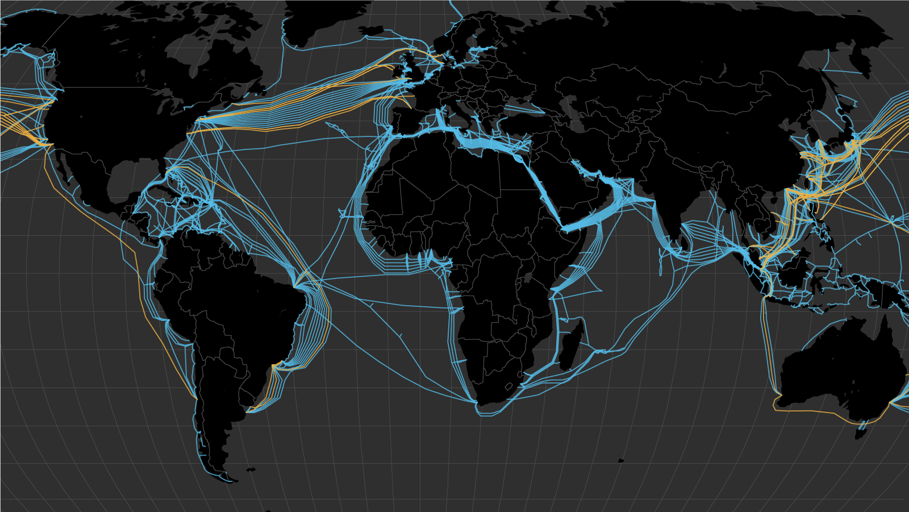

The internet connects people and information globally.
In the late 1960s, the U.S. Department of Defense created a computer network called ARPANET (Advanced Research Projects Agency Network). It started in 1969 and connected universities and research centers so they could share information and computer resources. ARPANET used packet switching, which allowed information to be divided into small packets and sent between computers efficiently. The network was important because it helped develop many of the ideas and technologies used by the Internet today. It also played a major role in the development of TCP/IP, which allows different computer networks to communicate with each other. Because of this, ARPANET is considered an important foundation of the modern Internet.
The Creation of the World Wide Web.
Tim Berners-Lee created the World Wide Web. He was a British computer scientist working as a researcher at CERN, the European particle physics laboratory near Geneva, Switzerland — not as a physicist, but within CERN's computing division, where he dealt with the practical challenge of managing information across the lab's many research groups. He wrote his initial proposal for the web in March 1989, and by 1990 had built its core technologies: HTML for structuring pages, HTTP for transferring data between computers, and the URL system for addressing content, along with the first web browser and web server. The first website went live in 1991. The web was created to solve a real problem at CERN: thousands of researchers from around the world used different, incompatible computer systems, and information was scattered and hard to share or connect. Berners-Lee's solution was hypertext — documents that could link directly to other documents, hosted anywhere, accessible through a simple interface. His underlying goal was decentralization: open standards anyone could use, with no central authority controlling the network. A decisive moment came in 1993, when CERN made the technology free for anyone to use, which let the web spread quickly as an open foundation rather than a proprietary tool.
The first Webpage.
The first webpage was created by Tim Berners-Lee at CERN in Switzerland and published on August 6, 1991, though the underlying idea and the first web server, known as CERN httpd, had already been developed during 1990. The page itself was titled "World Wide Web" and consisted mainly of text explaining what the World Wide Web project was about: how it worked, what hypertext meant, and how people could go about creating their own webpages. It also included links to further information, such as guidance on getting started with a web browser and details about the network protocol being used. Its purpose was to act as an informational starting point for the new project, describing the goal of building a system that would let researchers share information with one another through hypertext links over the internet, while also offering practical instructions to colleagues at CERN, and eventually to people worldwide, on how to use and contribute to this emerging system. A reconstructed version of the page is still accessible today through CERN's servers, in case you'd like to see how it originally looked.

The First Major Web Browser
The first major web browser was Mosaic, developed by Marc Andreessen and Eric Bina at the National Center for Supercomputing Applications (NCSA) at the University of Illinois. It was released in 1993, with an early version appearing in February and a more widely distributed version later that year. Mosaic became important for the development of the web for several reasons: it was one of the first browsers to display images directly embedded within the text of a page rather than opening them separately, which made the web far more visually appealing and accessible to ordinary users. It also featured a user-friendly graphical interface that allowed people without technical backgrounds to browse the internet, which contributed strongly to spreading the web beyond the research community and into the general public. Mosaic was additionally made available for several different operating systems, giving it a broad reach across many types of users. Many of the developers behind Mosaic later founded the company Netscape and created the Netscape Navigator browser, which built on Mosaic's ideas and became one of the dominant browsers during the web's early commercial era.
IP Addresses and DNS
An IP address is a unique numerical identifier assigned to every device connected to a network, allowing it to send and receive data across the internet. It functions much like a postal address, specifying exactly where information should be delivered. IP addresses typically appear in one of two formats: IPv4, written as four groups of numbers separated by periods (for example, 192.168.1.1), or the newer IPv6, which uses a longer alphanumeric format to accommodate the growing number of devices online. DNS, or the Domain Name System, works alongside IP addresses by translating human-readable domain names, such as example.com, into the numerical IP addresses that computers actually use to locate one another on the network. It essentially acts as a directory or phonebook for the internet, matching easy-to-remember names to the more complex numerical addresses behind them. DNS is needed because people find it far easier to remember and type words than long strings of numbers, so without it, users would have to memorize the specific IP address of every website they wanted to visit. By allowing us to simply type a familiar name into a browser, DNS handles the translation process automatically behind the scenes, making the web practical and user-friendly for everyday use.
Sweden's First Website
Sweden's first website was created in 1993 by Lysator, the academic computer club at Linköping University. As soon as the World Wide Web was standardized, the club moved quickly to launch what became Sweden's first website, doing so right after the American supercomputing institute NCSA released the WWW standard, and they built their own web server for the purpose, called "Spinner." Records from the time show the server was up and running by around late April 1993. The person behind it was Per Hedbor, a 21-year-old student at the time. The site itself was fairly simple, focused on describing Lysator and what the club did, along with some information about its members, and its front page pointed to the club's Gopher service, its FTP service, and information about the online MUDs that Lysator ran. As for whether it still exists today, Lysator as an organization remains active and still runs a website, but the original 1993 page in its exact original form is no longer live; a screenshot of it from that era has been preserved and is shown by Sweden's internet history museum as a record of this milestone.